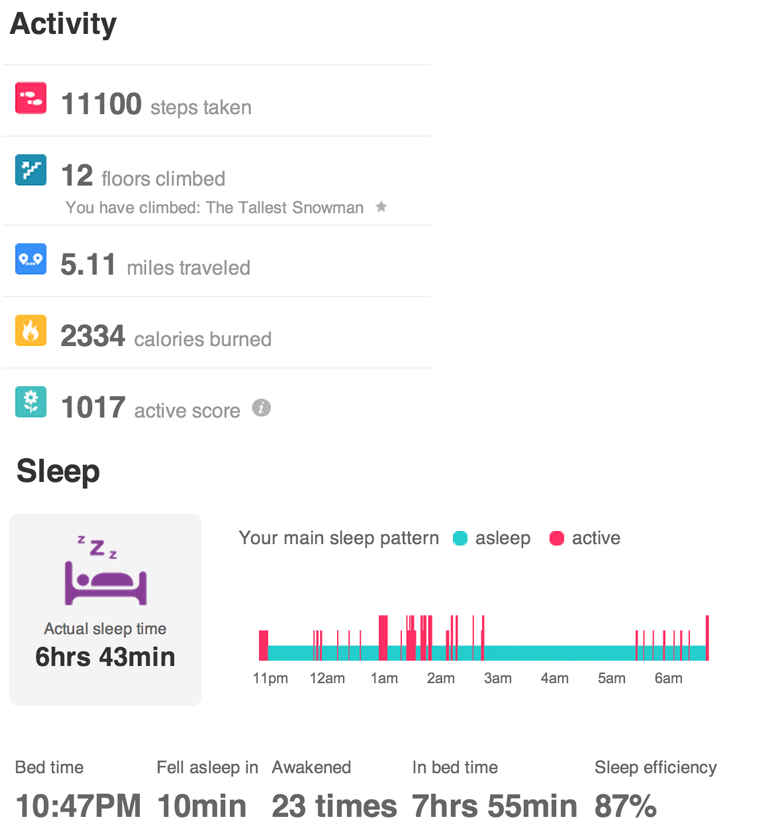

Have you heard of Fitbit? It’s sorta like a pedometer in that it tracks your steps, but it does so much more than that. My husband ordered Fitbits back in December for us. You wear the little tracker during the day as well as at night and it will track your steps, stairs climbed, calories, weight, and sleep. There is an iPhone app that it works with where you can enter the food you eat throughout the day. In addition they have a scale that syncs up with everything so you know your BMI. You can set up weight loss goals and it will tell you what your calories should be for the day to lose weight by a certain period of time. You can also add how many glasses of water you’ve had.
The MOST interesting aspect for me is how it tracks sleep. After having used the Fitbit for the last few months I have determined if I am awakened anytime between 12a and 2a I will definitely be dragging the next day. If I somehow manage to not be awakened during that time I seem to be fine. It’s quite interesting. Here’s a bit of the data on me in case you are interesting in what the dashboard looks like.

I will tell you that night of sleep that I’m showing you in the picture…I was not just dragging the next day, I was downright grumpy.
For the record, Fitbit didn’t pay for any of this, we bought it ourselves. 🙂


Recent Comments